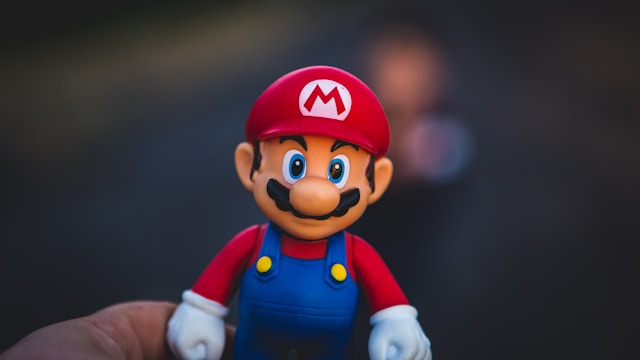
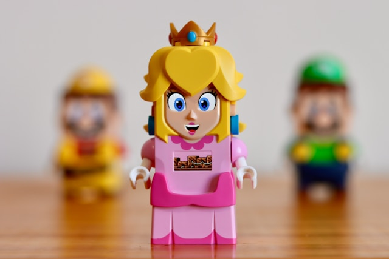
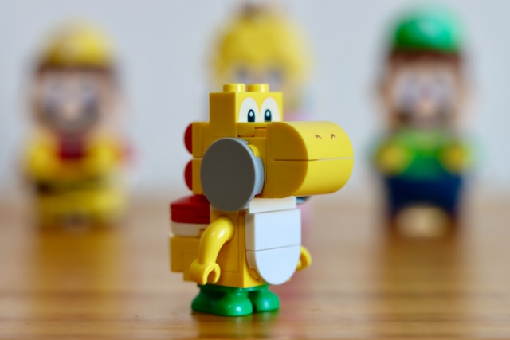
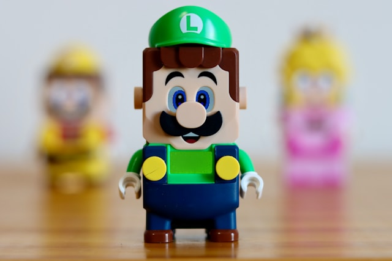

Welcome to the "Super Mario Bros" Network. This website is a just an imitation of what I think could be a representative of all things Mario.
Super Mario Bros stars...

Mario is one of two protagonists of the 1993 Super Mario Bros.

Princess Peach is the princess of the Mushroom Kingdom.

Yoshi is an ally of Mario and is the protagonist of his own franchise.

Luigi is Mario's younger brother in the Super Mario franchise.
Super Mario Bros. is a video game released for Nintendo Entertainment System in 1985. It shifted the gameplay away from its single-screen arcade predecessor, Mario Bros., and featured side-scrolling platformer levels.
Super Mario Wiki
Call to join! It's time!
Sign up for the network by clicking that button right over there!